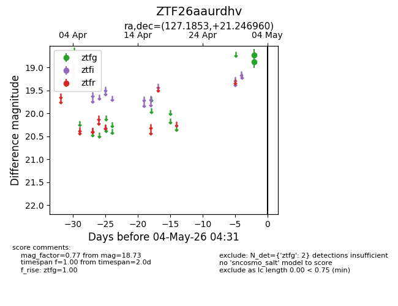
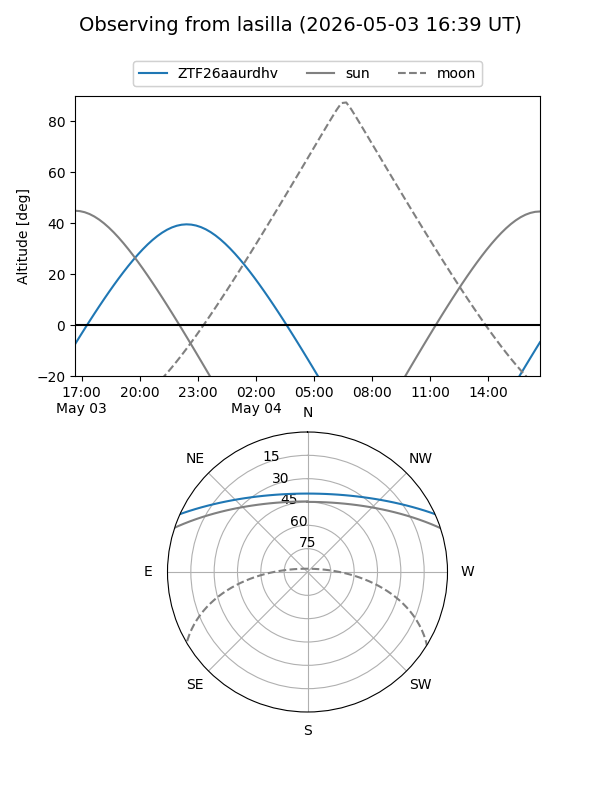
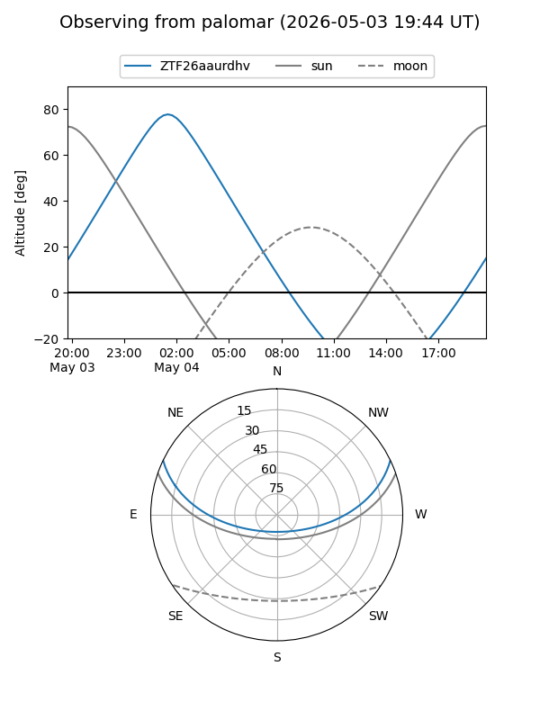

ZTF26aaurdhv
Target ZTF26aaurdhv at 2026-05-04 04:47
Aliases and brokers:
FINK: link
Lasair: link
ALeRCE: link
alt names
ZTF26aaurdhv (ztf,fink_ztf)
Coordinates:
equatorial (ra, dec) = 127.1853,+21.24696
equatorial (HMS+DMS) = 08:28:44.47,+21:14:49.06
galactic (l, b) = (203.0820,+30.45972)
Flags:
Photometry:
last ztfg=18.73
2 ztfg detections
Lightcurve

Visibility


Additional plots